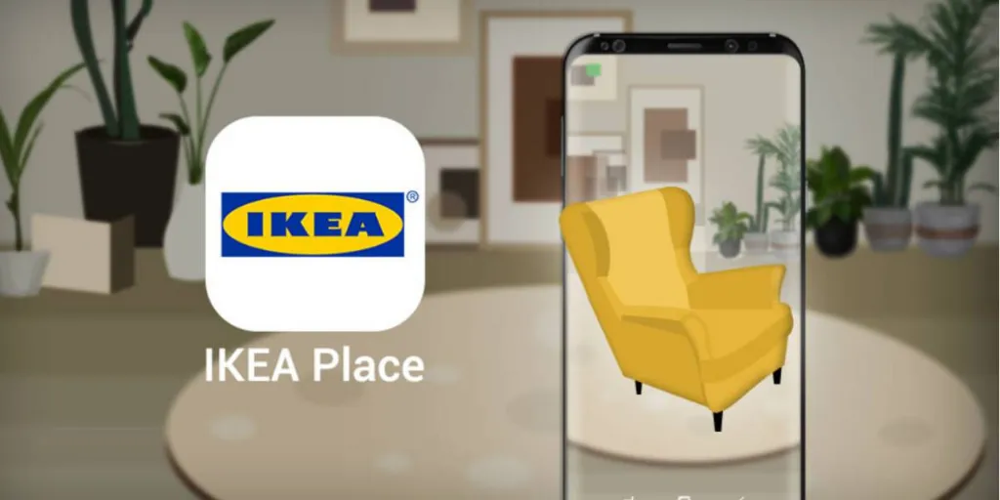
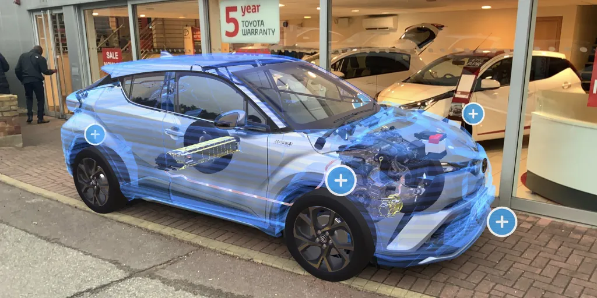

Queremos conocer tus proyectos

Quienes laboran en el campo de la arquitectura, construcción, desarrollo inmobiliario, y diseño, seguramente habrán escuchado de la Fotogrametría; una técnica que emplea la fotografía de un objetivo en diferentes ángulos para capturar su estructura completa, ya sea mediante el uso de cámaras convencionales, o cámaras aéreas montadas en drones, según sea el caso.
El objetivo en cuestión puede ser una fruta, una mesa, una escultura, un edificio de treinta pisos, e inclusive calles enteras de una ciudad. Posteriormente, las fotografías del objetivo serán procesadas en computadora mediante un software especializado, el cual unirá las fotos y las transformará en un modelo digital 3D que puede ser explorado, modificado, moldeado, y empleado para diversos propósitos.
Junto a la Fotogrametría, los trabajadores de las inmobiliarias comienzan a obtener una combinación ganadora para sus proyectos al emplear la Realidad Aumentada. Tomando el ejemplo de la imagen más arriba: Supongamos que necesitas presentar una propuesta de diseño interior a tus clientes pero deseas ahorrar el tiempo y dinero de preparar un showroom presencial, pero con los modelos 3D de los muebles y decoraciones de tu proveedor ya capturados con Fotogrametría y utilizando software para preparar una habitación digital completamente personalizable y mostrable en la pantalla de un dispositivo móvil, puedes introducir a tu clientela una vista directa del proyecto terminado, con la capacidad de cambiar los elementos en ella de forma libre y adaptable en cuestión de minutos, todo al alcance de tus manos.
Ésta tecnología ha permitido a múltiples profesionales utilizar un canvas mediante el cual pueden explayar sus ideas de forma exponencial, y pudiendo compartirla en poco tiempo con una mayor cantidad de clientes en diferentes partes del mundo.
Estando en continuo desarrollo y avance, la Realidad Aumentada en las inmobiliarias presente una excelente forma de asistir a sus departamentos de marketing y ventas, al poder obtener un modelo digital fácilmente colocable en un terreno que apenas va siendo preparado para los cimientos, se puede tener una fotografía con un render 3D del complejo terminado, como fácilmente se puede apreciar en los anuncios de varias empresas de desarrollo urbano.
De igual forma, es sumamente útil para las primeras fases de diseño y proyección, ya que puede generarse incluso un mapeo interior completo de la edificación, completa con una simulación de habitantes para apreciar cómo quedaría y funcionaria al término de la construcción, desde la infraestructura hasta los terminados; pinturas, herrería, amenidades, cuartos y habitaciones, entre otros. Ésto resulta particularmente útil al detectar desperfectos en la planeación, errores de cálculo, modificaciones al diseño, o ajustes de último minuto, todo antes de siquiera cimentar la primera piedra, una vez más, todo desde una tablet o un smartphone.
En la actualidad, ya hay varias empresas desarrollando y empleando aplicaciones de Realidad Aumentada que asisten a éstos propósitos, como:
Google Measure es una herramienta básica que permite tomar medidas precisas de objetos y lugares a través de la cámara y procesador de un móvil, pudiendo importar los datos obtenidos a CAD listos para diseñar. Enfocado al diseño de interiores y con un empleo básico de RA, pero útil y fácil de emplear.
Si sigues nuestro blog, reconocerás que hemos mencionado a IKEA en varias ocasiones anteriores, y es que su app, IKEA Place, es de las más reconocidas en cuanto a RA para comercios, permitiendo al usuario colocar cualquier pieza de su catálogo en cualquier habitación mediante su smartphone, pudiendo cambiar su posición y color conforme mejor se adecúe a sus preferencias.
Ve el artículo de decoración - se menciona caso IKEA
Smart Reality permite a los arquitectos visualizar sus diseños al derecho y al revés en modelos digitales realistas, pudiendo exponer y explorar cada capa estructural del edificio desde sus bases, pudiendo moverse libremente en cada parte del proyecto y grabar cada paso para poderlo compartir más adelante. Además, es compatible con dispositivos de Realidad Virtual como Oculus Rift y Samsung Gear, entre otros.
Por supuesto, estas aplicaciones van más allá del diseño de interiores y construcción. Toyota, el gigante japonés del mundo automotriz, cuenta con showrooms interactivos que pueden mostrar a sus clientes hasta el más mínimo detalle de sus automóviles; desde el chasis, el sistema eléctrico, los componentes del motor, hasta las llantas, y los exteriores, pudiendo explorar diferentes opciones y paquetes del mismo modelo sin tener que rotarlos físicamente.
Por su parte, la aerolínea Lufthansa y el Aeropuerto de Denver ya emplean Realidad Aumentada tanto para sus pasajeros como para su personal. En el caso de los pasajeros, les ofrece una experiencia de atención personalizada independiente, pudiendo apreciar indicadores, datos, costos, requerimientos, y otras utilidades relativas a la aerolínea antes y después de abordar. Para su personal, resulta particularmente útil en los entrenamientos, introducción de nuevas técnicas y procesos, y, por su puesto, en el mantenimiento de sus equipos.
Todas las aplicaciones mencionadas tienen la gran bondad de ser compatibles con la mayoría de los dispositivos móviles, ya sean smartphones o tablets sin necesidad de accesorios o hardware adicional.

Tehama St, Sn Francisco Cal,
USA +52 5628253489 MX

Puebla 237 Col Roma, CDMX
+52 5628253489 MX